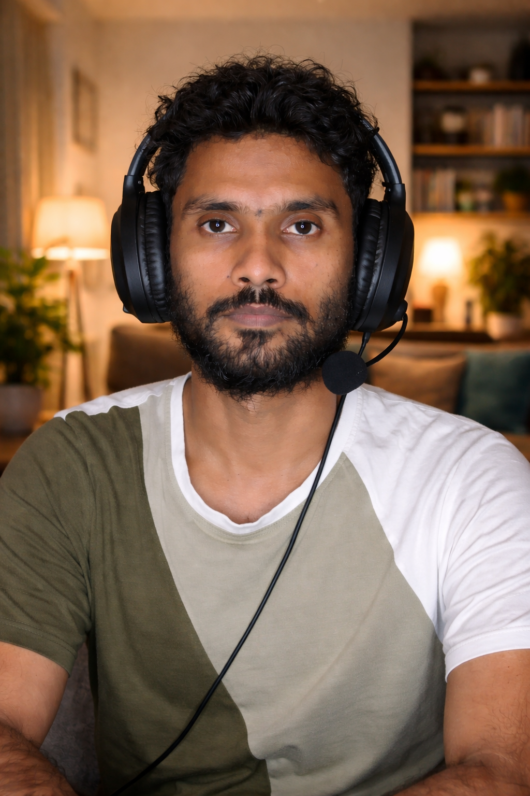
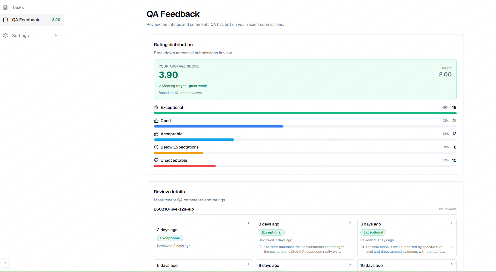

Hello! I am a dynamic professional bridging the worlds of smart technology, business growth, and digital security. As an AI & Workflow Automation Specialist, I help organizations scale efficiently.
Alongside my core expertise in B2B lead generation, data management, and Python-driven automation, I maintain a solid foundation in Cyber Security, ensuring that digital processes remain protected and resilient.
Targeted prospecting, list building using LinkedIn Sales Navigator, Apollo.io, and Hunter.io.
Comprehensive LinkedIn profile research and accurate CRM data entry/management (HubSpot).
Designing and implementing Python scripts and low-code integrations for business process efficiency.
Expert-level evaluation, training, and fine-tuning of AI models, specializing in Bengali language contexts.
High-accuracy audio transcribing services, carefully listening to audio/video recordings and writing precise text.
Maintaining high accuracy and top-tier performance standards. My current average QA score is 3.90 / 2.00 (Target), reflecting exceptional quality in AI evaluation and training.

Outlier AI | May 2026 – Present
Evaluating and training AI models for accuracy, language precision, and contextual relevance, specifically for the Bengali language.
Nazimuddin Bhuiyan Degree College